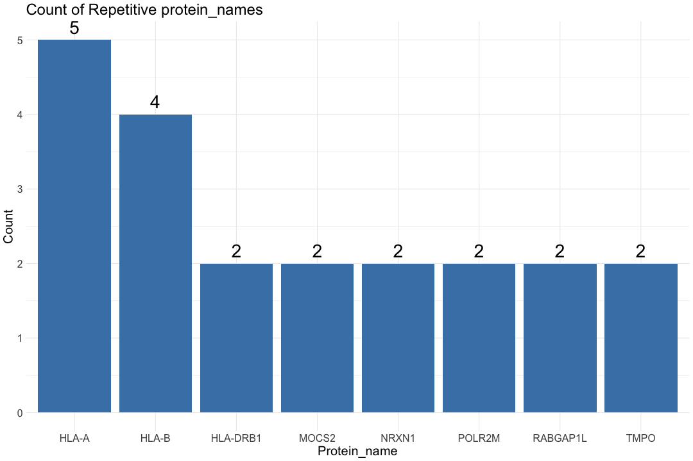

library(stringr) library(dplyr)
library(ggplot2)
## Warning: package 'ggplot2' was built under R version 4.5.2
library(tidyr) library(DT) # Data set: ROSMAP (N=610), Minimally regressed, batch- and set-corrected protein abundance. Batch within set, and inter-set (ROSMAP set1 and set2) correction handled by separate repeats of TAMPOR (proteins kept with <50% missing values within sets); 610 total cases (syn28723003) protein_data <- read.csv("/Users/poddea/Desktop/ROSMAP_data_100623/TMT_proteomics/Round2/2a.Zero-centered_log2(abundance)-ROSMAP610.R1+R2-2xTAMPORcorrected.csv", sep =",", header = TRUE, stringsAsFactors = FALSE) dim(protein_data)
## [1] 7814 611
#head(protein_data) # Split the protein_ID column by "|" split_protein_data <- str_split_fixed(protein_data$X, "\\|", 2) # Combine the split data with the original dataframe protein_data$Protein_name <- split_protein_data[, 1] protein_data$Uniprot_ID <- split_protein_data[, 2] # Count the repetitive Protein_name count_data <- protein_data %>% group_by(Protein_name) %>% summarise(count = n()) %>% filter(count > 1) # Print the number of repetitive protein_name cat("Number of repetitive protein_name:", nrow(count_data), "\n")
## Number of repetitive protein_name: 8
# Create a horizontal bar chart ggplot(count_data, aes(x = reorder(Protein_name, -count), y = count)) + geom_bar(stat = "identity", fill = "steelblue") + labs(title = "Count of Repetitive protein_names", x = "Protein_name", y = "Count") + geom_text(aes(label = count), vjust = -0.5, size = 10) + # Add text annotations + theme_minimal() + theme(text = element_text(size=20))

# Find the row (Protein_name) with the highest absolute row sum across all columns for each repetitive Protein_name protein_data_filtered <- protein_data %>% group_by(Protein_name) %>% slice(which.max(abs(rowSums(across(starts_with("b"), is.numeric), na.rm = TRUE)))) %>% ungroup() dim(protein_data_filtered)
## [1] 7801 613
################################################################################################################################################################# ## INPUT data File Filtering - Remove proteins without given name (symbol) ## Used "Protein_name as first column in the data file" # Filter rows where Protein_name is not 0 protein_data_filtered <- protein_data_filtered[protein_data_filtered$Protein_name != "0", ] # Print the number of IDs with protein_name cat("Number of IDs with protein_name:", nrow(protein_data_filtered), "\n")
## Number of IDs with protein_name: 7800
# Remove the Uniprot_ID column protein_data_filtered$Uniprot_ID <- NULL # Replace the first column with Protein_name #protein_data_filtered$X <- protein_data_filtered$Protein_name # Move Protein_name to the first column protein_data_filtered <- protein_data_filtered[, c("Protein_name", setdiff(names(protein_data_filtered), "Protein_name"))] # Remove the "X" column protein_data_filtered$X <- NULL dim(protein_data_filtered)
## [1] 7800 611
# Print the table using DT datatable(protein_data_filtered, options = list(pageLength = 5, autoWidth = TRUE))
## Warning in instance$preRenderHook(instance): It seems your data is too big for ## client-side DataTables. You may consider server-side processing: ## https://rstudio.github.io/DT/server.html